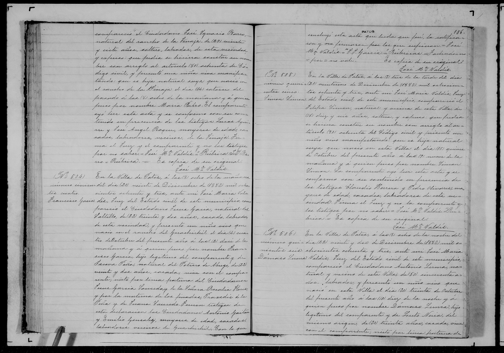

← Volver al Archivo Central
Expediente Histórico: Acta Nacimiento Francisco Garcia Peña 1883

Manuscrito Original (Clic para ampliar)
Transcripción Paleográfica
Perfil: Acta de Nacimiento
Descripción: Registro civil de nacimiento de Francisco García Peña, del año 1883.
Transcripción:
Al margen: Francisco García.
En la Oficialía del Registro Civil de General Cepeda, a los [...] días del mes de [...] de mil ochocientos ochenta y tres, compareció Onofre García, de [...] años de edad, de oficio [...], para presentar vivo a un niño nacido el día cuatro del presente mes a las [...] horas, al que puso por nombre Francisco, hijo legítimo suyo y de su esposa Antonia Flores. Abuelos paternos: Juan de Dios García y María del Refugio Peña. Abuelos maternos: Jesús Flores y Rosario Villanueva. Fueron testigos [...] y para que conste lo firmé.